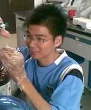

关于我
本人姓周，名家健，纠号“＋－”，2010年毕业于华南农业大学，生命科学学院，生物技术专业。同年4月，加入深圳华大基因研究院社会性动物研究课题组，从事昆虫基因组研究工作。2011.9加入深圳华大科技服务有限公司，从事微生物基因组分析业务的新产品开发。同时进入香港中文大学－华大基因跨组学创新研究所学习，于2013.6获得理学硕士学位。现供职于香港中文大学医学院生物病理系及李嘉诚健康研究所生物医学计算中心，从事二代高通量测序DNA/RNA数据分析及其医学临床应用。
研究方向
- 长链非编码RNA作用机理：整合高通量测序数据，用网络分析方法研究lncRNA作用机理；
- 基于NGS技术临床检测方法开发：基于血浆核酸测序的非侵入式临床疾病检测方法开发；
- 全基因组注释：基因组及转录组组装、注释和功能分析。
联系方式
Address: Room503, Li Ka Shing Institute of Health Sciences, PWH, Shatin, HongKong
Phone: +852 5983 9217 | Email: zhoujj2013@gmail.com

解码DNA和RNA序列，洞察生命奥秘。